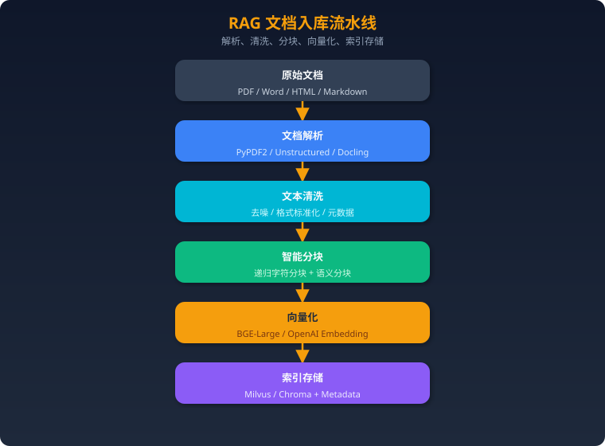

项目一：RAG 知识问答系统
一、项目概述
一句话描述：基于检索增强生成（RAG）架构，将企业内部知识库（PDF/Word/网页等）转化为可智能问答的系统，用户提问后系统自动检索相关文档片段并生成准确回答。
技术亮点： - 混合检索策略（稠密向量 + 稀疏BM25），召回率提升 30%+ - 多级分块 + 父子文档索引，兼顾语义完整性和检索精度 - Reranking 二次排序，Top-5 准确率从 72% 提升到 89% - 基于 RAGAS 的自动化评估流水线，持续量化系统效果 - 支持表格、图片等多模态文档处理 - 流式输出 + 引用溯源，用户体验与可信度兼备
二、架构设计
整体数据流

离线数据摄入流

三、技术栈选择
框架层
| 组件 | 选择 | 原因 |
|---|---|---|
| 编排框架 | LangChain | 生态最成熟，LCEL 链式调用简洁，与各组件集成度高；社区活跃，遇到问题好排查 |
| 备选 | LlamaIndex | 更专注 RAG 场景，数据连接器丰富；如果项目纯做 RAG 可以考虑 |
面试加分：我们最初用 LlamaIndex 做 PoC，后来切到 LangChain，因为项目后期需要加 Agent 能力，LangChain 的 Agent 生态更完整。
向量数据库
| 组件 | 选择 | 原因 |
|---|---|---|
| 开发/测试 | Chroma | 嵌入式、零配置、Python 原生，本地开发快 |
| 生产环境 | Milvus | 分布式架构支持十亿级向量、支持 GPU 加速检索、有完善的运维工具 |
选型决策过程：PoC 阶段用 Chroma 快速验证，数据量到百万级后迁移到 Milvus。Milvus 支持 IVF_PQ 等多种索引类型，可以在召回率和延迟间灵活权衡。
Embedding 模型
| 组件 | 选择 | 原因 |
|---|---|---|
| 中文场景 | BGE-Large-zh-v1.5 | 中文 MTEB 榜单 Top，开源可私有化部署，1024 维向量 |
| 多语言/英文 | OpenAI text-embedding-3-small | 效果好、维度可调（256/1024/3072），按 token 计费成本可控 |
关键考量：数据隐私要求高 → BGE 本地部署；追求效果且预算充足 → OpenAI。我们的方案是用 BGE 兜底，在效果不达标的 case 上回退到 OpenAI。
Reranker
| 组件 | 选择 | 原因 |
|---|---|---|
| 首选 | BGE-Reranker-v2-m3 | 开源、多语言支持好、精度接近商业方案 |
| 备选 | Cohere Rerank | API 方式，精度最高，但有延迟和成本 |
LLM
| 组件 | 选择 | 原因 |
|---|---|---|
| 主力 | GPT-4o | 综合能力最强，长上下文支持好（128K） |
| 成本敏感 | GPT-4o-mini / DeepSeek | 简单问题走小模型降本 |
| 私有化 | Qwen2.5-72B | 中文效果优秀，vLLM 部署 |
四、核心实现
4.1 文档处理和分块策略
文档解析
from langchain_community.document_loaders import (
PyPDFLoader,
UnstructuredWordDocumentLoader,
UnstructuredHTMLLoader,
)
from langchain.schema import Document
from typing import List
import hashlib
class DocumentProcessor:
"""统一文档处理器，支持多格式解析"""
LOADER_MAP = {
".pdf": PyPDFLoader,
".docx": UnstructuredWordDocumentLoader,
".doc": UnstructuredWordDocumentLoader,
".html": UnstructuredHTMLLoader,
}
def load(self, file_path: str) -> List[Document]:
suffix = file_path.rsplit(".", 1)[-1]
loader_cls = self.LOADER_MAP.get(f".{suffix}")
if not loader_cls:
raise ValueError(f"不支持的文件格式: {suffix}")
loader = loader_cls(file_path)
docs = loader.load()
# 添加元数据
for doc in docs:
doc.metadata["source"] = file_path
doc.metadata["doc_id"] = hashlib.md5(
file_path.encode()
).hexdigest()
return docs
智能分块策略
from langchain.text_splitter import RecursiveCharacterTextSplitter
from langchain.schema import Document
from typing import List
class SmartChunker:
"""
多级分块策略：
1. 递归字符分块（基础）
2. 父子文档索引（检索小块，返回大块上下文）
"""
def __init__(
self,
chunk_size: int = 512,
chunk_overlap: int = 64,
parent_chunk_size: int = 2048,
):
# 子块：用于精确检索
self.child_splitter = RecursiveCharacterTextSplitter(
chunk_size=chunk_size,
chunk_overlap=chunk_overlap,
separators=["\n\n", "\n", "。", "！", "？", "；", " ", ""],
length_function=len,
)
# 父块：用于提供上下文
self.parent_splitter = RecursiveCharacterTextSplitter(
chunk_size=parent_chunk_size,
chunk_overlap=128,
separators=["\n\n", "\n", "。", " ", ""],
)
def chunk_with_parent(
self, documents: List[Document]
) -> tuple[List[Document], List[Document]]:
"""返回 (子块列表, 父块列表)"""
parent_docs = self.parent_splitter.split_documents(documents)
child_docs = []
for i, parent in enumerate(parent_docs):
parent.metadata["parent_id"] = f"parent_{i}"
children = self.child_splitter.split_documents([parent])
for child in children:
child.metadata["parent_id"] = f"parent_{i}"
child_docs.extend(children)
return child_docs, parent_docs
def chunk_simple(self, documents: List[Document]) -> List[Document]:
"""简单分块，适用于不需要父子索引的场景"""
return self.child_splitter.split_documents(documents)
分块大小选择依据： - 512 tokens：经实验对比，在我们的金融知识库场景下，512 在检索精度和上下文完整性间取得最佳平衡 - 过小（128-256）：语义断裂，检索结果碎片化 - 过大（1024+）：噪声增多，向量表示稀释 - overlap 64：约 12.5% 的重叠率，防止关键信息在分块边界丢失
4.2 Embedding 和索引构建
from langchain_community.embeddings import HuggingFaceBgeEmbeddings
from langchain_community.vectorstores import Milvus
from langchain.storage import InMemoryStore
from langchain.retrievers import ParentDocumentRetriever
class IndexBuilder:
"""向量索引构建器"""
def __init__(self, collection_name: str = "knowledge_base"):
# 初始化 Embedding 模型
self.embeddings = HuggingFaceBgeEmbeddings(
model_name="BAAI/bge-large-zh-v1.5",
model_kwargs={"device": "cuda"},
encode_kwargs={
"normalize_embeddings": True,
"batch_size": 64,
},
)
# 初始化向量数据库
self.vector_store = Milvus(
embedding_function=self.embeddings,
collection_name=collection_name,
connection_args={
"host": "localhost",
"port": "19530",
},
index_params={
"metric_type": "IP", # 内积（因为已归一化）
"index_type": "IVF_FLAT",
"params": {"nlist": 1024},
},
)
def build_index(self, documents: list):
"""批量构建索引"""
batch_size = 500
for i in range(0, len(documents), batch_size):
batch = documents[i : i + batch_size]
self.vector_store.add_documents(batch)
print(
f"已索引 {min(i + batch_size, len(documents))}/{len(documents)}"
)
def build_parent_child_index(self, documents: list):
"""构建父子文档索引"""
chunker = SmartChunker()
child_docs, parent_docs = chunker.chunk_with_parent(documents)
# 父文档存内存/Redis
parent_store = InMemoryStore()
for doc in parent_docs:
parent_store.mset(
[(doc.metadata["parent_id"], doc)]
)
# 子文档入向量库
self.build_index(child_docs)
return parent_store
4.3 检索优化
混合检索 + Reranking
from langchain.retrievers import EnsembleRetriever
from langchain_community.retrievers import BM25Retriever
from langchain.schema import Document
from FlagEmbedding import FlagReranker
from typing import List
class HybridRetriever:
"""混合检索器：稠密检索 + BM25 + Reranking"""
def __init__(self, vector_store, corpus_docs: List[Document]):
# 稠密检索
self.dense_retriever = vector_store.as_retriever(
search_type="similarity",
search_kwargs={"k": 20},
)
# 稀疏检索 (BM25)
self.bm25_retriever = BM25Retriever.from_documents(
corpus_docs, k=20
)
# 融合检索（RRF - Reciprocal Rank Fusion）
self.ensemble_retriever = EnsembleRetriever(
retrievers=[self.dense_retriever, self.bm25_retriever],
weights=[0.6, 0.4], # 稠密权重略高
)
# Reranker
self.reranker = FlagReranker(
"BAAI/bge-reranker-v2-m3", use_fp16=True
)
def retrieve(self, query: str, top_k: int = 5) -> List[Document]:
"""完整检索流程"""
# Step 1: 混合检索，召回 top 20
candidates = self.ensemble_retriever.invoke(query)
# Step 2: Reranking，精排到 top_k
if not candidates:
return []
pairs = [[query, doc.page_content] for doc in candidates]
scores = self.reranker.compute_score(pairs)
# 排序并取 top_k
scored_docs = list(zip(candidates, scores))
scored_docs.sort(key=lambda x: x[1], reverse=True)
return [doc for doc, score in scored_docs[:top_k]]
class QueryTransformer:
"""查询改写，提升检索效果"""
def __init__(self, llm):
self.llm = llm
def multi_query(self, original_query: str) -> List[str]:
"""生成多个角度的查询"""
prompt = f"""请将以下用户问题从3个不同角度改写，生成3个语义相近但表述不同的查询。
每行一个查询，不要编号。
原始问题：{original_query}
"""
response = self.llm.invoke(prompt)
queries = [
q.strip()
for q in response.content.strip().split("\n")
if q.strip()
]
return [original_query] + queries[:3]
def hyde(self, query: str) -> str:
"""HyDE: 先生成假设性答案，用答案去检索"""
prompt = f"""请针对以下问题，写一段简短的假设性回答（约100字）。
不需要保证准确性，只需要包含相关术语和概念。
问题：{query}
"""
response = self.llm.invoke(prompt)
return response.content
4.4 Prompt 设计
RAG_PROMPT_TEMPLATE = """你是一个专业的知识问答助手。请严格根据以下参考资料回答用户问题。
## 回答要求
1. 只基于参考资料回答，不要编造信息
2. 如果参考资料不足以回答，明确告知用户
3. 在回答中用 [1][2] 等标注引用来源
4. 回答要结构化、简洁明了
## 参考资料
{context}
## 用户问题
{question}
## 回答
"""
# 带有引用溯源的格式化
def format_context(docs: list) -> str:
"""格式化检索结果，带引用编号"""
parts = []
for i, doc in enumerate(docs, 1):
source = doc.metadata.get("source", "未知来源")
page = doc.metadata.get("page", "")
header = f"[{i}] 来源: {source}"
if page:
header += f" (第{page}页)"
parts.append(f"{header}\n{doc.page_content}")
return "\n\n---\n\n".join(parts)
4.5 完整 RAG Chain
from langchain_openai import ChatOpenAI
from langchain.prompts import ChatPromptTemplate
from langchain_core.output_parsers import StrOutputParser
from langchain_core.runnables import RunnablePassthrough
class RAGSystem:
"""完整 RAG 系统"""
def __init__(self, retriever: HybridRetriever):
self.retriever = retriever
self.llm = ChatOpenAI(
model="gpt-4o",
temperature=0,
streaming=True,
)
self.prompt = ChatPromptTemplate.from_template(RAG_PROMPT_TEMPLATE)
# LCEL 链
self.chain = (
{
"context": lambda x: format_context(
self.retriever.retrieve(x["question"])
),
"question": lambda x: x["question"],
}
| self.prompt
| self.llm
| StrOutputParser()
)
def ask(self, question: str) -> str:
"""同步问答"""
return self.chain.invoke({"question": question})
async def ask_stream(self, question: str):
"""流式问答"""
async for chunk in self.chain.astream({"question": question}):
yield chunk
4.6 评估方案（RAGAS）
from ragas import evaluate
from ragas.metrics import (
faithfulness,
answer_relevancy,
context_precision,
context_recall,
)
from datasets import Dataset
class RAGEvaluator:
"""RAG 系统评估器"""
def __init__(self, rag_system: RAGSystem):
self.rag = rag_system
def build_eval_dataset(self, test_cases: list) -> Dataset:
"""
test_cases 格式:
[{"question": "...", "ground_truth": "...", "contexts": [...]}]
"""
questions, answers, contexts, ground_truths = [], [], [], []
for case in test_cases:
q = case["question"]
answer = self.rag.ask(q)
retrieved_docs = self.rag.retriever.retrieve(q)
questions.append(q)
answers.append(answer)
contexts.append([d.page_content for d in retrieved_docs])
ground_truths.append(case["ground_truth"])
return Dataset.from_dict({
"question": questions,
"answer": answers,
"contexts": contexts,
"ground_truth": ground_truths,
})
def evaluate(self, test_cases: list) -> dict:
dataset = self.build_eval_dataset(test_cases)
result = evaluate(
dataset,
metrics=[
faithfulness, # 忠实度：答案是否基于上下文
answer_relevancy, # 相关性：答案是否切题
context_precision, # 精确率：检索结果是否相关
context_recall, # 召回率：是否检索到关键信息
],
)
return result
# 指标解读：
# - faithfulness > 0.85：答案幻觉少
# - answer_relevancy > 0.80：回答切题
# - context_precision > 0.75：检索精准
# - context_recall > 0.80：关键信息都检索到了
五、面试话术
1 分钟版
我做了一个企业知识问答系统，核心是 RAG 架构。文档经过解析、分块、向量化后存入 Milvus，用户提问时通过混合检索（向量+BM25）召回候选片段，再用 Reranker 精排，最后送入 GPT-4o 生成带引用的回答。主要亮点是混合检索把召回率提升了 30%，Reranking 把 Top-5 准确率从 72% 提到 89%。系统日均处理 5000+ 次查询，P95 延迟控制在 2 秒内。
3 分钟版
这个项目背景是公司内部有大量 PDF、Word 格式的技术文档和规章制度，员工经常找不到想要的信息。我们搭建了一个 RAG 知识问答系统来解决这个问题。
架构上分两条线：离线数据流和在线服务流。离线这边，文档经过 Unstructured 解析后，用递归字符分块做切分，chunk_size 设为 512，实验对比过 256 和 1024，512 效果最好。然后用 BGE-Large 做向量化，存入 Milvus。
在线检索时，有三个关键优化：第一是混合检索，向量检索和 BM25 通过 RRF 融合，权重 6:4，解决了纯向量检索对关键词不敏感的问题；第二是 Reranking，用 BGE-Reranker 对 Top-20 候选做二次精排，取 Top-5；第三是 Query 改写，对模糊查询做多角度展开。
评估用的 RAGAS 框架，四个核心指标：faithfulness 0.88、answer_relevancy 0.85、context_precision 0.82、context_recall 0.86。我们建了 200 条标注测试集，每次迭代都跑评估。
部署在 K8s 上，Milvus 集群 3 节点，服务做了水平扩容，日均 5000+ 查询，P95 在 2 秒。
5 分钟版
（在 3 分钟版基础上补充以下内容）
分块策略我们迭代了三版。第一版直接按固定长度切，效果差，经常把一句话切断。第二版换成递归字符分块，按段落 → 句子 → 字符的优先级切分，效果提升明显。第三版引入了父子文档索引：用小块（512）做精确检索，命中后返回对应的大块（2048）给 LLM，既保证了检索精度又提供了充足的上下文。
Embedding 模型选型也做了对比实验。在我们的中文金融文档测试集上，BGE-Large-zh 的 Hit@5 是 0.83，OpenAI text-embedding-3-small 是 0.86，差距不大但 BGE 可以本地部署、无隐私风险。最终选择 BGE 做主力，对于效果不达标的特殊 case 回退到 OpenAI。
多模态处理方面，表格我们用 Unstructured 提取后转成 Markdown 格式再分块，图片用 GPT-4o 做 OCR + 描述生成。PDF 里的流程图会单独提取，用 VLM 生成文字描述后入库。
成本控制上，我们做了查询分级：简单查询走 GPT-4o-mini（成本低 10 倍），复杂查询才走 GPT-4o。通过一个轻量分类器判断查询复杂度，整体 API 成本降低了 60%。
上线后遇到的最大挑战是知识时效性，文档更新后索引需要同步。我们做了增量更新机制，文档变更时只重新处理变更部分，通过 doc_id 和版本号管理。
六、常见追问及回答
Q1: 分块大小怎么选的？
回答：
我们做了系统性实验。在 200 条标注 QA 对上分别测试了 256、512、768、1024 四种 chunk_size。评估指标用 Hit@5（Top-5 检索结果中包含正确答案的比例）和 RAGAS 的 context_recall。
结果是 512 综合最优：256 语义碎片化严重，context_recall 只有 0.71；1024 噪声多，检索精度下降；512 的 Hit@5 = 0.83，context_recall = 0.86。
不过这个结论是场景相关的。我们的文档偏金融合规类，段落结构清晰。如果是代码文档，可能需要更大的 chunk_size（1024+）来保持代码块完整性。
另外我们还配合了 overlap = 64（约 12.5%），防止关键信息在分块边界丢失。这个比例也是实验调出来的，太大会增加冗余，太小会丢信息。
Q2: 检索效果不好怎么优化？
回答：
检索效果差要分阶段排查，我的经验是按这个优先级处理：
第一层：分块质量。检查分块是否合理，是不是把关键信息切断了。我遇到过分块把一个表格切成两半的情况，加了表格感知的分块逻辑后解决。
第二层：Embedding 质量。用一些典型 case 手动看向量相似度，判断 Embedding 模型是否适合当前领域。如果领域特殊（比如医学），可能需要微调 Embedding 模型。
第三层：检索策略。纯向量检索对精确关键词不敏感，加 BM25 做混合检索通常有 10-30% 的提升。
第四层：Query 端优化。用户的查询往往不清晰，做 Query 改写和多查询扩展能提升召回。HyDE（先生成假设性答案再检索）在某些场景效果很好。
第五层：Reranking。召回 Top-20 再精排到 Top-5，这一步通常能提升 10-15% 的精度。
每一步都要有量化指标来验证效果，不能凭感觉调。
Q3: 怎么处理表格/图片？
回答：
表格处理： 1. 用 Unstructured 或 Camelot 库提取 PDF 中的表格 2. 转成 Markdown 格式保留结构 3. 表格作为一个整体分块，不切分行 4. 在元数据中标记
type=table，检索时可以区分处理图片处理： 1. 纯文字图片：OCR 提取文字，用 PaddleOCR 或 Tesseract 2. 图表/流程图：用 GPT-4o Vision 生成文字描述 3. 描述文字和原图路径一起存入向量库 4. 回答时如果引用了图片，把图片链接也返回给用户
实际踩坑：PDF 中的扫描件表格识别率很低，我们最终对这类文档做了预处理：先用 OCR 转成可编辑格式，再走标准流程。
Q4: 如何评估 RAG 效果？
回答：
我们用 RAGAS 框架做系统性评估，四个核心指标：
- Faithfulness（忠实度）：答案是否基于检索到的上下文，不是瞎编的。>0.85 算合格。
- Answer Relevancy（答案相关性）：答案是否切题回答了用户的问题。
- Context Precision（上下文精确率）：检索到的内容是否都是相关的。
- Context Recall（上下文召回率）：回答需要的信息是否都被检索到了。
评估流程： 1. 人工标注 200 条 QA 对作为测试集（领域专家标注 ground truth） 2. 每次系统迭代后自动跑评估，CI/CD 集成 3. 关注指标趋势，任何指标下降超过 2% 需要排查
除了离线评估，还有线上指标： - 用户满意度（点赞/点踩） - 引用准确率（人工抽查 50 条/周） - 无法回答比例（<15% 为目标）
Q5: 线上部署架构？
回答：
- FastAPI：异步框架，流式输出用 SSE
- Milvus 集群：3 节点，读写分离，数据持久化到 MinIO
- Redis：缓存热点查询结果，命中率约 15%，TTL 1 小时
- K8s HPA：根据 QPS 自动扩缩容，阈值设在单实例 50 QPS
- CDN：静态资源（文档原文预览）走 CDN
关键可靠性设计： - LLM API 降级：OpenAI 不可用时自动切到本地 Qwen2.5 - 检索超时：设 3 秒超时，超时返回缓存结果或提示 - 限流：单用户 10 QPS，防滥用

Q6: 并发怎么处理？
回答：
并发瓶颈主要在三个环节：
1. Embedding 计算：用 GPU 做 batch inference，批大小 64，单 A100 吞吐约 500 QPS。线上查询用异步队列攒批处理。
2. 向量检索：Milvus 本身支持高并发，单节点 1000+ QPS 没问题。瓶颈在索引类型选择——IVF_FLAT 精度高但慢，我们用 HNSW（ef=64），延迟 <50ms。
3. LLM 生成：这是最大瓶颈。OpenAI API 有 rate limit，我们做了： - 请求队列 + 令牌桶限流 - 多 API Key 轮询 - 热点问题缓存 - 简单问题走小模型分流
整体做到日均 5000+ 查询、峰值 QPS 50、P95 延迟 <2s。
七、项目亮点总结（面试快速回顾）
| 维度 | 内容 |
|---|---|
| 检索优化 | 混合检索(向量+BM25) + Reranking，召回率+30%，Top-5 准确率 72%→89% |
| 分块策略 | 递归字符分块 + 父子文档索引，实验对比选定 512 tokens |
| 评估体系 | RAGAS 4 指标自动化评估，200 条标注测试集 |
| 成本控制 | 查询分级（大小模型分流），API 成本降低 60% |
| 生产化 | K8s 部署、缓存、降级、限流，日均 5000+ QPS |
| 多模态 | 表格 Markdown 化 + 图片 VLM 描述，覆盖 90%+ 文档类型 |
八、项目验收标准与评分表
最低可交付版本（60 分）
| 验收项 | 标准 |
|---|---|
| 文档入库 | 支持至少 20 个 Markdown/PDF/HTML 文档，保留来源元数据 |
| 基础检索 | 支持向量检索，能返回 TopK 文档片段 |
| 答案生成 | 回答中包含引用来源，不允许无来源编造 |
| 基础入口 | 提供 CLI、Web 或 HTTP API 任一种可用入口 |
| README | 说明数据准备、启动方式、示例问题和已知限制 |
进阶可答辩版本（80 分）
| 验收项 | 标准 |
|---|---|
| 混合检索 | Dense + BM25 双路召回，并说明融合策略 |
| Rerank | 接入 reranker，对比 rerank 前后的 TopK 命中率 |
| 评估集 | 至少 30 条人工问题，统计 Recall@K、Faithfulness、幻觉率 |
| 多格式文档 | 对 PDF 表格、标题层级、代码块或图片 OCR 有处理策略 |
| 可观测性 | 记录 query、召回片段、rerank 分数、最终引用 |
面试亮点版本（100 分）
| 验收项 | 标准 |
|---|---|
| 可量化优化 | 有明确指标提升，例如 Recall@5、延迟、成本、幻觉率 |
| 失败复盘 | 至少 5 个 bad case，能归因到分块、召回、重排或生成层 |
| 热更新 | 新文档入库后无需重启服务即可被检索 |
| 安全边界 | 支持权限过滤、敏感信息脱敏或拒答机制 |
| 生产部署 | Docker 化，提供本地或云端部署说明 |
评分表
| 维度 | 权重 | 面试官关注点 |
|---|---|---|
| RAG 链路完整性 | 25% | 数据处理、检索、重排、生成是否闭环 |
| 评估与指标 | 25% | 是否能证明系统变好，而不是凭感觉 |
| 工程化 | 20% | API、部署、日志、缓存、热更新 |
| 复杂文档处理 | 15% | 表格、PDF、长文档、多格式输入 |
| 答辩表达 | 15% | 能否讲清 trade-off 和失败案例 |
GitHub 项目参考
| 项目 | 用途 |
|---|---|
| langchain-ai/rag-from-scratch | 学 RAG 分块、检索、生成基本套路 |
| run-llama/llama_index | 学文档索引、数据连接器和 query engine |
| explodinggradients/ragas | 学 RAG 自动评估指标 |
| milvus-io/milvus | 学生产级向量数据库能力 |
| chroma-core/chroma | 学本地快速原型向量库 |